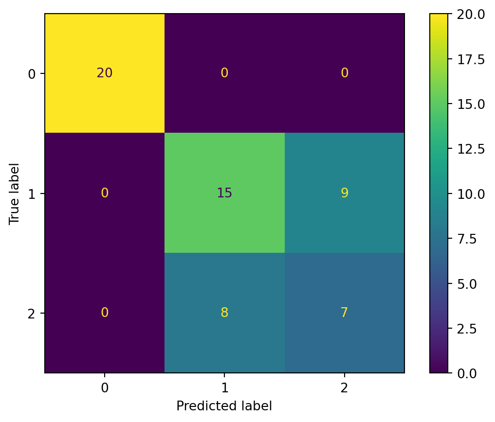
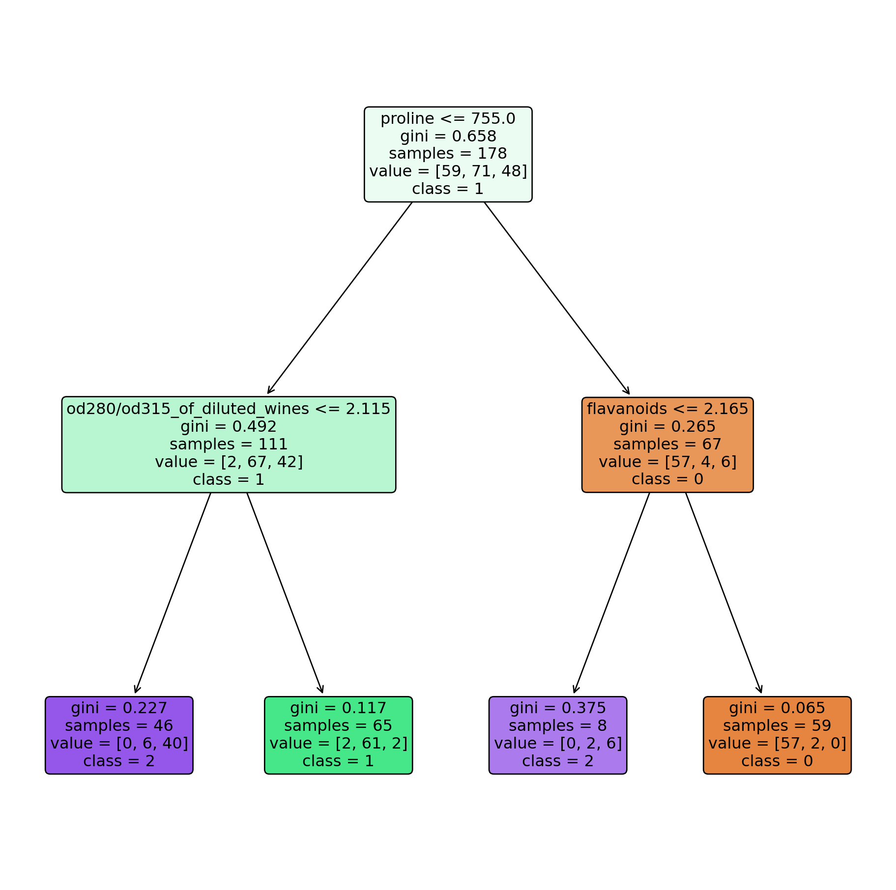
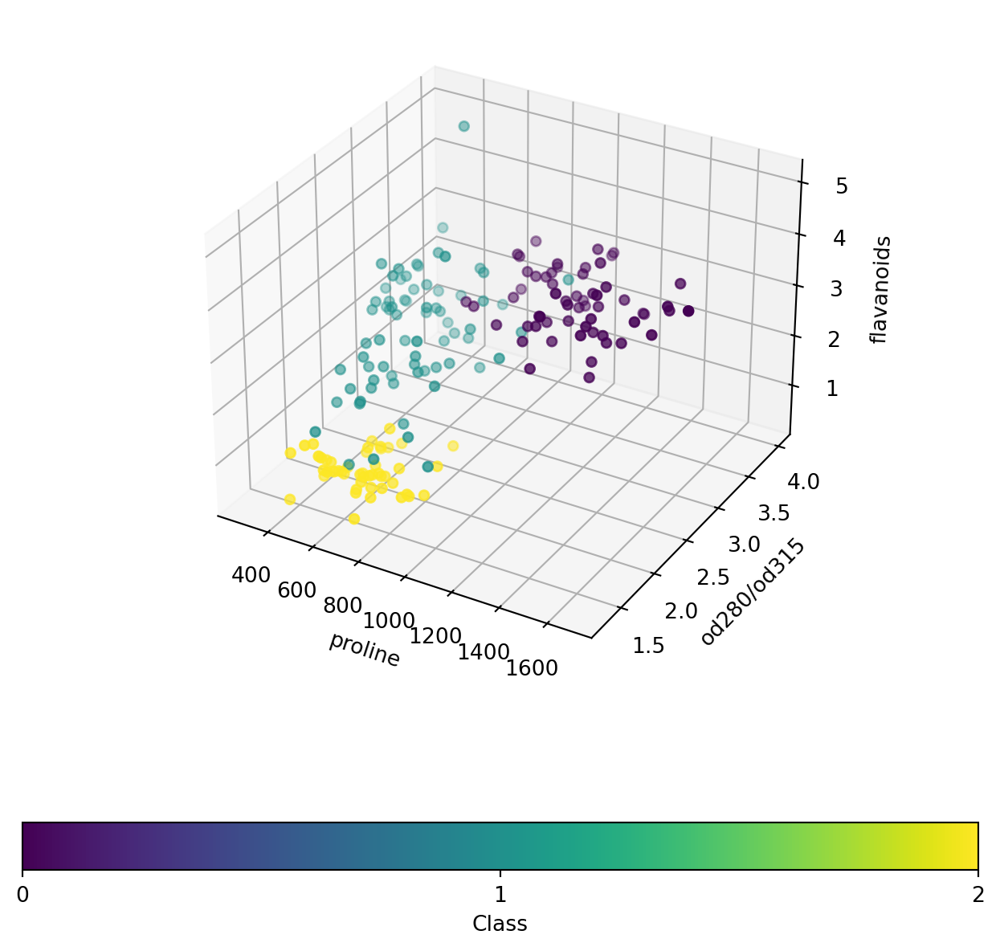

# Necessary data science packages
import sys
from packaging import version
import sklearn
import sklearn.datasets
import pandas as pd
import numpy as np
wine_dataset = sklearn.datasets.load_wine()
wine_df = pd.DataFrame(data=wine_dataset.data, columns=wine_dataset.feature_names)
wine_df['labels'] = wine_dataset['target'] # Also add the labels associated with each sample
# Allows results of the notebook to be reproducible.
np.random.seed(42)
X, y = wine_dataset.data, wine_dataset.targetIn this blog post, I will perform classification on the sklearn wine dataset. Based on their features, different wine samples will be classified into one of three different classes.
Get and examine data
Download data
X.shape(178, 13)yarray([0, 0, 0, 0, 0, 0, 0, 0, 0, 0, 0, 0, 0, 0, 0, 0, 0, 0, 0, 0, 0, 0,
0, 0, 0, 0, 0, 0, 0, 0, 0, 0, 0, 0, 0, 0, 0, 0, 0, 0, 0, 0, 0, 0,
0, 0, 0, 0, 0, 0, 0, 0, 0, 0, 0, 0, 0, 0, 0, 1, 1, 1, 1, 1, 1, 1,
1, 1, 1, 1, 1, 1, 1, 1, 1, 1, 1, 1, 1, 1, 1, 1, 1, 1, 1, 1, 1, 1,
1, 1, 1, 1, 1, 1, 1, 1, 1, 1, 1, 1, 1, 1, 1, 1, 1, 1, 1, 1, 1, 1,
1, 1, 1, 1, 1, 1, 1, 1, 1, 1, 1, 1, 1, 1, 1, 1, 1, 1, 1, 1, 2, 2,
2, 2, 2, 2, 2, 2, 2, 2, 2, 2, 2, 2, 2, 2, 2, 2, 2, 2, 2, 2, 2, 2,
2, 2, 2, 2, 2, 2, 2, 2, 2, 2, 2, 2, 2, 2, 2, 2, 2, 2, 2, 2, 2, 2,
2, 2])As can be seen from the above output, there are three different types of wine.
y.shape(178,)Inspect the data
We can first display the head of the wine dataframe.
wine_df.head()| alcohol | malic_acid | ash | alcalinity_of_ash | magnesium | total_phenols | flavanoids | nonflavanoid_phenols | proanthocyanins | color_intensity | hue | od280/od315_of_diluted_wines | proline | labels | |
|---|---|---|---|---|---|---|---|---|---|---|---|---|---|---|
| 0 | 14.23 | 1.71 | 2.43 | 15.6 | 127.0 | 2.80 | 3.06 | 0.28 | 2.29 | 5.64 | 1.04 | 3.92 | 1065.0 | 0 |
| 1 | 13.20 | 1.78 | 2.14 | 11.2 | 100.0 | 2.65 | 2.76 | 0.26 | 1.28 | 4.38 | 1.05 | 3.40 | 1050.0 | 0 |
| 2 | 13.16 | 2.36 | 2.67 | 18.6 | 101.0 | 2.80 | 3.24 | 0.30 | 2.81 | 5.68 | 1.03 | 3.17 | 1185.0 | 0 |
| 3 | 14.37 | 1.95 | 2.50 | 16.8 | 113.0 | 3.85 | 3.49 | 0.24 | 2.18 | 7.80 | 0.86 | 3.45 | 1480.0 | 0 |
| 4 | 13.24 | 2.59 | 2.87 | 21.0 | 118.0 | 2.80 | 2.69 | 0.39 | 1.82 | 4.32 | 1.04 | 2.93 | 735.0 | 0 |
Below are the column names and column data types.
wine_df.info()<class 'pandas.core.frame.DataFrame'>
RangeIndex: 178 entries, 0 to 177
Data columns (total 14 columns):
# Column Non-Null Count Dtype
--- ------ -------------- -----
0 alcohol 178 non-null float64
1 malic_acid 178 non-null float64
2 ash 178 non-null float64
3 alcalinity_of_ash 178 non-null float64
4 magnesium 178 non-null float64
5 total_phenols 178 non-null float64
6 flavanoids 178 non-null float64
7 nonflavanoid_phenols 178 non-null float64
8 proanthocyanins 178 non-null float64
9 color_intensity 178 non-null float64
10 hue 178 non-null float64
11 od280/od315_of_diluted_wines 178 non-null float64
12 proline 178 non-null float64
13 labels 178 non-null int64
dtypes: float64(13), int64(1)
memory usage: 19.6 KB# Get the value counts for each different type of wine.
wine_df['labels'].value_counts()labels
1 71
0 59
2 48
Name: count, dtype: int64It seems that the labels are roughly balanced, although wine type #1 is the most common.
Training and Predictions
Train Test Split
from sklearn.model_selection import train_test_split
X_train, X_test, y_train, y_test = train_test_split(X, y, test_size=0.33, random_state=42)X_train.shape
X_test.shape
y_train.shape
y_test.shape(59,)We have successfully performed a train-test split with 143 samples in the training set and 35 samples in the test set. Since we are dealing with a small dataset for multi-class classification, it might be helpful to use the SVM classifier.
from sklearn.svm import SVC
# Instantiate and fit on the training set.
svm_clf = SVC(random_state=42)
svm_clf.fit(X_train, y_train)SVC(random_state=42)In a Jupyter environment, please rerun this cell to show the HTML representation or trust the notebook.
On GitHub, the HTML representation is unable to render, please try loading this page with nbviewer.org.
SVC(random_state=42)
# Predict on the testing set.
predictions = svm_clf.predict(X_test)# Now, let's evaluate the accuracy of the predictions.
from sklearn.metrics import accuracy_score as accuracy
round(accuracy(y_test, predictions), 2)0.71We get an accuracy of around 71%. Let’s plot our results in a confusion matrix.
from sklearn import metrics
from sklearn.metrics import ConfusionMatrixDisplay
conf_matrix = metrics.confusion_matrix(y_test, predictions)
cm = ConfusionMatrixDisplay(confusion_matrix=conf_matrix, display_labels=[0,1,2])
cm.plot();
There are quite a few misclassified samples. Let’s try using a different model to see if we get better results. We can use a Decision Tree. To avoid overfitting, let’s set the max_depth to be 2.
from sklearn.tree import DecisionTreeClassifier
tree_clf = DecisionTreeClassifier(max_depth=2, random_state=42)
tree_clf.fit(X, y)DecisionTreeClassifier(max_depth=2, random_state=42)In a Jupyter environment, please rerun this cell to show the HTML representation or trust the notebook.
On GitHub, the HTML representation is unable to render, please try loading this page with nbviewer.org.
DecisionTreeClassifier(max_depth=2, random_state=42)
Now, let’s visualize the resulting dendrogram.
from sklearn.tree import export_graphviz
import matplotlib.pyplot as plt
from pathlib import Path
#Define the class labels.
class_labels_str = [str(elem) for elem in set(y)]
wine_classes = np.array(class_labels_str)
plt.figure(figsize=(12,12))
dendro = sklearn.tree.plot_tree(tree_clf, filled=True, rounded=True, feature_names=wine_dataset.feature_names,
class_names=wine_classes, fontsize=12)
plt.show()
From the dendrogram, we can see that there are less misclassifications than the support vector machine model. However, while the SVC model had 0 misclassifications for class 0, the DecisionTree misclassifies two samples as belonging to class 0.
Additional Visualizations
Let’s now visualize wine samples based on the features picked out by the decision tree. We can indicate the true labels of the samples on the plot.
fig = plt.figure(figsize=(8,8))
ax = fig.add_subplot(projection='3d')
scatter = ax.scatter(wine_df['proline'], wine_df['od280/od315_of_diluted_wines'], wine_df['flavanoids'], marker='o', c=wine_df['labels'])
ax.set_xlabel('proline')
ax.set_ylabel('od280/od315')
ax.set_zlabel('flavanoids')
# Add a legend
cbar = fig.colorbar(scatter, label="Class", orientation='horizontal')
cbar.set_ticks([0, 1, 2])
plt.show()
As we can see, it appears that these three features are good for distinguishing between the different wine classes. For the most part, the yellow, blue, and purple points don’t overlap, although there are a few exceptions.
Attributions
- https://scikit-learn.org/stable/modules/generated/sklearn.datasets.load_wine.html
- https://scikit-learn.org/stable/modules/svm.html
- https://scikit-learn.org/stable/modules/generated/sklearn.svm.SVC.html
- https://www.w3schools.com/python/python_ml_confusion_matrix.asp
- https://scikit-learn.org/stable/modules/classes.html#module-sklearn.tree
- https://stackoverflow.com/questions/59447378/sklearn-plot-tree-plot-is-too-small
- https://stackoverflow.com/questions/6715442/how-to-add-matplotlib-colorbar-ticks
- https://www.kaggle.com/code/cristianlapenta/wine-dataset-sklearn-machine-learning-project